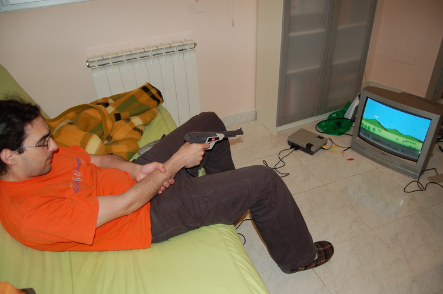

This feed contains pages in the "tech" category.
Avui m'he entretingut una mica més a esbrinar coses del demodulador de TDT que tenim endollat a la tele.
La caixa l'identifica com "Sansui DVB025". Mirant la web de Sansui, no hi surt res de televisió digital ni res de DVB025. I mirant a l'apartat de distribuïdors veig que per Europa distribueix una empresa italiana, Motom Italia Spa, que per la seva web només venen motos i peces de motos.
Per altra banda, obrint l'aparell, veig que a la placa hi diu DVB-T-130, i un integrat gran etiquetat amb el nom SPHE1003Ax. Dies enrera en vaig buscar la datasheet a google i altres cercadors, però no vaig trobar res. Només n'havia trobat una lleugera descripció a la web del fabricant, sunplus. I avui, tot buscant altres coses, finalment l'he trobada: la datasheet del SPHE1003Ax.
No és que hi expliqui gaire res. Però entenc que la CPU que gasten és una S+Core. Fa gràcia que parlin de que té un joc d'instruccions privatiu, i que en canvi s'hi compila amb el compilador GNU C/C++. Potser els hi podria demanar el codi font i tot. Però tampoc en trauria gaire res.
Un amic té un receptor semblant, i de fet les cadenes que identifiquen tan el programari com el maquinari coincideixen amb el meu (hw DVB-TV1.1, sw sunplus_box_tv1.20). Jo en buscava codis (firmware), ja que tant el meu com el seu permeten actualitació a través d'un fitxer en una memòria USB. Jo pel meu no n'he trobat cap d'aquests fitxers, però ell m'ha passat un enllaç a un del seu. Mirant les cadenes de texte (poques), he acabat ensopegant amb una cosa que apuntava clarament al sistema operatiu de temps real ecos. No el coneixia pas! Ja m'ha fet gràcia trobar-lo. I cercant una mica més, he anat a parar a una altra connexió entre sunplus i ecos, en una carta a la llista de correu d'ecos. La placa del DVB025 té un altre punt interessant; quatre forats sense soldar on hi diu "GND/RX/TX/+5V". Avui he rebut un cable FTDI USB-sèrie, el TTL-232R-3V3, que he comprat per accedir a això i al port sèrie del nanonote, de 3,3V també. I espero que em serveixi també per aplicacions de ports sèries 5V, com la gp2x f200 potser, tot i que en tinc la Cradle. El port sèrie del DVB025 he vist que sortia per l'euroconnector, on els pins són: 10-rx, 12-tx, 14-gnd. Per comprovar-ho, mireu que al 'tx' hi ha, la major part del temps, nivell alt de 3,3V.
Connectant-me a allò que semblava un port sèrie, doncs, he vist que anava a 115200 bauds (per les traces que he vist per pantalla només amb aquesta velocitat), i que per molt que hi enviés coses, no m'ha reaccionat. No n'he pas pogut treure res més, per aquest camí; he mirat si hi havia cap Redboot que em permetés remenar coses, però res. Pel port sèrie, doncs, he rebut això:
sp8200tv_setup_ntsc sp8200tv_setup_pal ## timerw_isr_install ## TV_FORMAT 128 [DEMOD DEBUG] ## SPDC210/SPDC230/SPHE1003 Full Driver Version 5.21.0 2009/05/06 [DEMOD DEBUG] ## RF_MODULE: NXP TDA18218 [DEMOD DEBUG] TS output [F7:0xA0] [F8:0x19] [F9:0x0C] [DEMOD DEBUG] ## Demod Init OK!! (1003) [DEMOD DEBUG] TDA18218_TunerChipProgramming: SAW_8MHz!!! [DEMOD DEBUG] tmTDA18218Init!!! [DEMOD DEBUG] TDA18218_TunerChipProgramming: IF_FREQ = [3880000] [DEMOD DEBUG] ## Tuner Init OK!! ## [DEMOD DEBUG] TS output [F7:0xA0] [F8:0x19] [F9:0x0C] TV_FORMAT 128 [DEMOD DEBUG] ## tuner_connect_signal 594000000 Hz ... [DEMOD DEBUG] SPDC_SetBandwidth: IF_4MHz!!! [DEMOD DEBUG] TDA18218_TunerChipProgramming: SAW_8MHz!!! [DEMOD DEBUG] tmTDA18218Init!!! [DEMOD DEBUG] TDA18218_TunerChipProgramming: IF_FREQ = [3880000] [DEMOD DEBUG] ====> Fail!!
No hi tenia pas ni l'antena ni la tele endollada. Potser per això les traces sembla que indiquin desgràcies.
Fa uns dies que un test d'automake va fallar a mips, però no m'havia fallat mai gaire abans. Vaig dir-ho a la llista d'automake però al final, comentant-ho amb en Ralf de freenode (el que es cuida del linux a mips), sembla que tot va lligat amb un problema de linux 2.6.36 i unes històries que van afegir relacionades amb syscall restarts, que fa fallar (almenys) la crida vfork() de tant en tant.
Els problemes no passen a 2.6.35. A veure si en Ralf ho arregla aviat.
Actualització: fent proves amb en Ralf, hem determinat que el problema és en aquest canvi
Ahir al vespre vaig tornar-me a posar a fer "enginyeria inversa" del sensor de temperatura PCE-HT71.
Vaig utilitzar un Windows XP sobre qemu sobre Linux 2.6.35, amb el programa original de PCE. Vaig utilitzar el mòdul usbmon i el wireshark per veure les trames USB.
El resultat és que passades les 3 de la nit tenia un programa que funcionava per tot el que em cal. Ho he pulit una mica, i ho he publicat a la meva web.
L'altre dia ens van deixar un televisor, pel que hem comprat un decodificador de TDT (Sansui DVB025 per 35€). Aquest té USB Host i podem connectar-hi un dispositiu USB-Storage, i n'entén les particions FAT.
Pot gravar-hi el que li diem de la TDT (programat amb temps si cal - 2h de pel·lícula del canal 8tv hi han ocupat 6GB en MPEG2), i a més reprodueix videos en el contenidor AVI i codificació d'imatge XVID i de so MP3 o MPEG4 AAC.
Amb l'ffmpeg, he vist que només reprodueix el que codifico amb la llibreria libxvid, i no pas res fet amb mpeg4 o msmpeg4. De fet, tot i que reprodueix MPEG2 (és el que grava), aquest només el reprodueix en el contenidor MPG.
Com que m'agrada veure programes que han emès per TV3 (per exemple, Singulars), vull utilitzar el servei de 3 a la carta per a veure'n els videos amb l'aparell Sansui DVB025.
Veient que TV3 dóna els seus videos amb RTMP, buscant una mica vaig trobar el programa rtmpdump que em permet estirar en forma d'AVI (codificats amb h264 a 15fps) el de 3 a la carta. Vaig necessitar una mica d'anàlisi de la comunicació HTTP amb el Wireshark per veure com puc transformar la URL del navegador al mirar un video, a una adreça RTMP.
Al final m'he acabat fent aquest script, que em baixa un video donada una URL de 3 a la carta, i me'l passa a video XVID de 500kbps amb l'ffmpeg, tot perfecte per posar-lo a un disc dur amb interfície USB que connecto al Sansui. Li he dit gettv3:
#!/bin/sh
ID=`echo "$1" | sed -e 's,.*/\([0-9]*\)/\?.*$,\1,' `
if [ -n "$2" ]; then
FILE="$2"
else
FILE=`echo "$1" | sed 's|.*/\([^/]*\)$|\1|'`.avi
fi
URL=`wget -O - 'http://www.tv3.cat/su/tvc/tvcConditionalAccess.jsp?ID='$ID'&QUALITY=H&FORMAT=MP4&rnd='$RANDOM | grep rtmp | sed 's/.*\(rtmp:[^<]*\).*/\1/' `
rtmpdump -r "$URL" | ffmpeg -i - -b 500000 -vcodec libxvid -acodec copy "$FILE"
Finalment he tornat a activar la Nintendo NES al pis. Ens han deixat un televisor que té Euroconnector, i hi puc endollar la NES amb un parell de cables RCA.
Per cert, tot i que també tinc la original, faig servir la NES pirata perquè té uns quants jocs precarregats i, el més important, la pistola.
Ja he jugat una estona a matar ànecs, al tir al plat (Duck Hunt), a matar cartells de bons i dolents, i a encertar llaunes que volen a l'aire (Hogan's Alley). Boníssims tots.
Precisament vaig adquirir aquesta NES pirata amb la pistola un bon dia de Sant Jordi, als Encants de Barcelona. A més, vaig endur-me un parell de Mega Drives amb una vintena de jocs, i una Master System II també amb uns quants jocs. I el cartutx de Tetris de NES a part, també. Em sembla que de tot plegat en vaig pagar poc més de vint euros. Ho devia comprar el primer o segon any de pis amb en Natxo.
Remenant les caixes de jocs de consola també he trobat el Zelda II de NES, que em vaig comprar per les mateixes dates al mercat de Sant Antoni per 30€. Allà es cotitzaven cars aquests jocs.
Per cert, abans de muntar-ho a la televisió final, m'he decidit a provar la meva teoria de que "la pistola no funcionarà amb els televisors LCD, per retards al pintar". I he vist confirmada la meva sospita amb una Sony Bravia. Disparant, no encertava res, ni des de mig pam de la pantalla.
I una foto de record:

Des que vaig començar a fer servir GMail (a finals de 2004 crec), he fet servir la seva interfície web. Fins llavors feia servir el mutt, amb la meva adreça de correu controlada per un postfix a vicerveza.
Ara doncs, després de sis anys, he tornat al mutt, després de veure que tenia uns bons clients IMAPS i SMTPS (amb fitxers de memòria cau de capçaleres i missatges). El faig servir amb el meu compte de GMail, i no em cal tenir cap configuració especial al sistema ni tenir la meva contrassenya de GMail guardada a disc, ja que me la demana a l'accedir als serveis per primer cop.
Feia temps que estava tip de la feinada que té el firefox en fer anar la web de GMail. Em semblava abusiu. Ara torno a tenir un consum de CPU raonable pel correu, i fins i tot es nota a la temperatura del portàtil.
La configuració clau del mutt ha estat:
set spoolfile="imaps://usuari@imap.gmail.com/"
set folder="imaps://usuari@imap.gmail.com/"
set record="=Sent"
set postponed="=Drafts"
set smtp_url="smtps://usuari@smtp.gmail.com/"
Ahir em vaig estar barallant amb com funciona l'estalvi de comunicació HTTP (HTTP Cache). Els navegadors utilitzen el protocol de comunicació HTTP per a demanar pàgines web als servidors, i l'estalvi de comunicacions HTTP ha de repercutir en una expriència de navegació més fluïda.
Els mecanismes que hi intervenen els podem trobar descrits a l'RFC 2616 Secció 13.
Pel que he entès, diferencien dos grans parts del procés:
- Temps de validesa, edat màxima, tolerància a versions antigues (expire time,
max-age,max-stale): això acaba determinant, un cop el navegador ha demanat una pàgina, quant de temps la considerarà prou recent com per ni intentar saber si n'hi ha una versió més nova. - Revalidació: el navegador pot demanar la pàgina especificant de quan té la última còpia, i llavors el servidor pot escollir retornar-ne una còpia nova (200 OK) o simplement avisar al navegador de que ja en té una còpia prou recent (304 Nothing changed). Fins i tot, amb els ETags, es pot comprovar per contingut i no només per data. El navegador només intenta revalidar si té almenys una còpia de la pàgina a mostrar, clar.
Els paràmetres que determinen els temps involucrats en aquest estalvi de transferències els podem establir al navegador (que és el que sol portar un sistema cau HTTP - HTTP cache), al servidor, a cada pàgina HTML, etc.
L'Apache serveix contingut estàtic (fitxers de disc) per HTTP per defecte sense anunciar cap temps de validesa (Expire time). Això sol voler dir que el sistema cau (el navegador, segurament) pot escollir el temps de validesa que cregui convenient. Per exemple, Firefox 3 crec que pràcticament dóna validesa eterna al contingut HTTP sense temps de validesa associat.
A través del mod_expire, l'Apache pot establir un temps de validesa del
contingut de manera prou flexible. El contingut d'aquest bloc l'Apache el
serveix estàticament, i tenia el problema que la gent amb Firefox 3 havia de
forçar una recàrrega, fins i tot després d'un dia d'haver-lo visitat. Vaig
utilitzar el mod_expire ahir per a establir un temps de validesa de mitja
hora, que el firefox respecta perfectament. La petició del contingut de
l'exemple ha passat a les 15:43:09:
Expires: Thu, 01 Apr 2010 14:13:09 GMT
Cache-Control: max-age=1800
Amb Firefox 3 vaig haver d'instal·lar el mòdul Live HTTP Headers per a comprovar que funcionava bé la nova configuració.
Respecte a l'estalvi de transferències HTTP, crec que en els països més
desenvolupats (en termes d'ample de banda d'accés a Internet) s'ha anat perdent
el costum de respectar aquests mecanismes, i per totes bandes trobem servidors
que marquen el seu contingut com must-revalidate (temps de validesa zero), i
que a més el contingut és servit dinàmicament i lentament per programets
(PHP, Java, ...). Tot sovint en casos en què les pàgines no canvien.
No hem d'oblidar que el navegador hauría de respectar que l'usuari apretés el botó de Recàrrega, perquè això obliga a assumir els temps de validesa zero, i a no intentar revalidar el contingut, sino obtenir-lo de nou.
Els navegadors solen tenir un mode de navegació anomenat Desconnectat
(Offline), on crec que ja només funcionarien els temporitzadors de l'estil
max-stale, que tenen a veure amb fins a quin punt el navegador ha de tolerar
contingut caducat. No entenc gaire bé com funciona aquesta part; no hi he pas
aprofundit. Però almenys el Firefox pot fer l'experiència de treballar
Desconnectat molt desagradable, no mostrant sovint cap pàgina tot i que es
tracti d'una pàgina visitada recentment.
Per cert, vaig començar a indagar tot això de l'HTTP cache perquè a l'afegir aquest bloc com a entrada de notes a Facebook, vaig fixar-me en que Facebook comprobava si hi havia alguna entrada nova al canal de continguts RSS només cada 24h. Això podia ser el temps de validesa que ells assignaven a pàgines que eren entregades sense cap temps de validesa, com les que el meu servidor servia.
Fa uns dies em vaig assabentar del protocol WebDAV, definit a l'RFC 4918.
Bàsicament, es tracta d'unes extensions sobre l'HTTP (Web-based Distributed Authoring and Versioning) pensades per a accedir un sistema de fitxers. O sigui, no només demanant fitxers per URL, sino també podent demanar llistats, pujar fitxers, etc.
El WebDAV bàsic inclou les operacions típiques que trobaríem a un FTP, servides per HTTP, i a més amb la possibilitat de bloquejar-hi fitxers, a l'estil d'un subversion lock. Això últim és per a permetre el treball en equip sobre un sol sistema de fitxers.
L'Apache pot servir un arbre del sistema de fitxers on corre mitjançant el mòdul mod_dav, tot i que no suportarà bloquejos si no hi fem participar també el mòdul mod_dav_lock.
Alguns navegadors suporten mínimament WebDAV, en bona part perquè està pensat per encaixar mínimament amb l'HTTP que parlen els navegadors. Els linux poden muntar sistemes de fitxers WebDAV a través del davfs2 amb FUSE. I els Windows, des de Windows 98, suporten accés WebDAV a través de les seves Carpetes Web (Web Folders). De tota manera, els Windows Vista i 7 64-bit sembla ser que tenen alguns problemes, sobretot amb WebDAV a través d'HTTPS. A més, també hi ha alguns programes client expressos, tal com hi ha clients d'FTP, com el cadaver, o per Windows el de BitKinex.
L'estrella de WebDAV és el Subversion, que no només parla WebDAV un cop servit amb Apache mitjançant el seu mòdul mod_dav_svn sino que a més parla una extensió de WebDAV anomenada DeltaV, que contempla el sistema de fitxers compartit amb control de versions. De fet, els clients de Subversion parlen WebDAV+DeltaV amb el seu servidor.
El mòdul mod_dav_svn, a més, suporta el que anomenen versionat
automàtic. Això vol
dir que els clients de WebDAV que no suportin DeltaV, cada cop que pugin un
fitxer al servidor, automàticament suposarà una nova revisió de subversion, una
nova versió del sistema de fitxers.
Les operacions de Subversion no mapegen una-a-una amb les de WebDAV+DeltaV, com per exemple en el cas de bloquejar fitxers; per això, el mòdul mod_dav_svn no suporta bloquejos, i si de cas, cal muntar-hi en paral·lel un mod_dav_lock.
I tot això està inventat de fa temps, i força suportat de sèrie als sistemes operatius populars. Sembla una manera ideal de tenir un sistema de fitxers compartit, no? La única traba que hi trobo és la complexitat de muntatge lligant-hi bé tots els mòduls d'Apache necessaris. Sort de NixOS!
This is the first post to this example blog. To add new posts, just add files to the posts/ subdirectory, or use the web form.